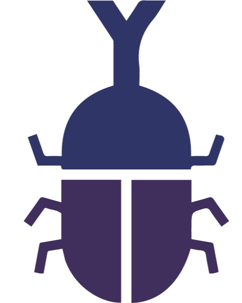
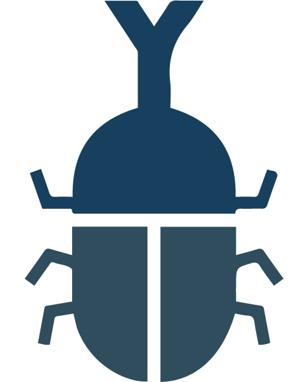
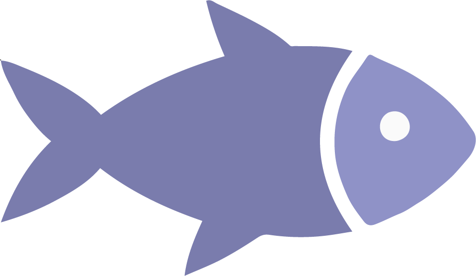
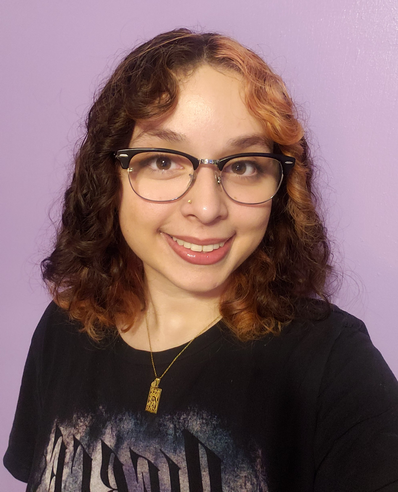

Get to Know Me!
Graphic Design Major · Seamstress




Hello everyone, my name is Antonella! I am currently a senior majoring in graphic design. Despite design being my main area of study, I've also become interested in exploring other creative paths, mostly because I like trying different things and don't see myself sticking to just one area of expertise.
That said, one of my biggest interests is clothing and apparel design, and I'd love to explore creating my own clothing or designing for a brand someday. One brand I religiously follow is Steady Hands (feel free to check them out!), and I would love to create something with a similarly distinct identity of my own. At the same time, I also love the idea of having a hand in designing video games, whether that means working on visuals, concepts, etc. I'm still figuring out where I want my career to take me, but for now, I'm happy to keep my options open and see which creative interests stick with me along the way.
If you'd like to see some of the work I've created in the past, I've put together a small collection of projects. It isn't necessarily a professional portfolio, but it includes a few creative pieces and projects from previous classes that I wanted to share!